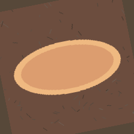

ResNet-18 · Transfer Learning · 7 Vegetarian Dishes
A frozen ImageNet backbone, a 3,591-parameter head, and six CPU-minutes of training — scoring 0.9911 test accuracy across dosa, idli, paneer curry, biryani, thali, samosa and lassi.

Live demo · real exported predictions
Every card below is a held-out test image. Clicking it replays the
model’s actual softmax output — top-3 probabilities straight from
results/predictions.json, no re-training required.
Evaluation · what the numbers say
Sample-weighted per-class accuracy grouped by meal category
(category_accuracy_summary.csv).
test images classified correctly. The single miss: one veg biryani read as paneer curry — both Main-Course bowls with warm palettes.
Under the hood · four stages
1,120 seeded, mobile-style food photos — 160 per dish — with plate-shape and palette signatures, split 896 / 112 / 112.
±25° rotation, brightness jitter, Gaussian blur and textured table backgrounds simulate real phone photography.
ImageNet-pretrained backbone converts each 224×224 crop to a 512-d feature. Only the 512→7 head trains.
Cross-entropy + Adam for 6 epochs; inference returns the dish label and top-3 probabilities shown in this demo.
python run_all.py→python frontend/build_demo_data.py→
python -m http.server 8000 --directory frontend